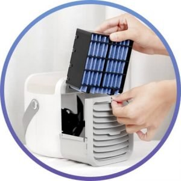
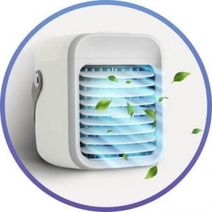
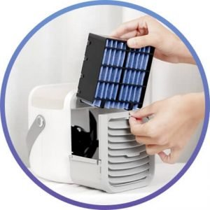
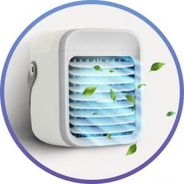

How to use Blaux Portable AC
1. Add water. Simply pour it directly into the top of the unit.

1. Add water. Simply pour it directly into the top of the unit.
1. Add water. Simply pour it directly into the top of the unit.
Blaux Portable AC is the perfect desk buddy during hot days at home or at the office. It’s a rechargeable air conditioning unit designed to be compact, portable, and powerful. Equipped with replaceable water curtains, Blaux Portable AC can filter dust particles and double as a humidifier. It also has 3 fan speeds to suit every need, mood lightning, and can operate with minimal noise.
Hot summer weather is a great excuse to have fun outdoors. But unless your home is equipped with air conditioning, the dog days of summer will feel quite unbearable once you’re back inside. It is the rechargeable desktop air cooler and humidifier for long-lasting relief during the hottest days. Cordless, compact, and lightweight, it goes where you go to sustain the perfect temperature.
Whether you’re looking for a break from the sun or you prefer cooler temperatures while sleeping, it lets you control the conditions for improved work, leisure, and relaxation. Unlike traditional fans and air conditioning units, it adds moisture to the air to prevent your skin, eyes, and nasal passages from drying out and becoming irritated.
The Blaux Portable AC Filters the Air Pollen, dust, and who knows what else is all floating around in the indoor air. And the indoor pollution only gets worse when you’re inside all the time. Even particles from your clothes and hair get into the air. The BLAUX PORTABLE AC has a changeable, efficient Water Curtain to trap all these particles before they get blown on YOU.
1. Add water. Simply pour it directly into the top of the unit.
1. Add water. Simply pour it directly into the top of the unit.
1. Add water. Simply pour it directly into the top of the unit.
No, it is very quiet.
How does the Blaux Portable AC purify the air?It uses a water curtain to filter dust particles in the air.
Does the Blaux Portable AC use a lot of electricity?No, it runs highly efficiently using evaporation technology that removes heat and produces cool air.
Can I buy this product in store?Blaux Portable AC is only available online and supplies are limited.
Can I leave this product on at night?Yes, the Blaux Portable AC unit can run while you sleep to keep you cool.
How do I set up this product?It’s easy, all you need to do is plug it in. It ships with an easy-to-understand user guide with care instructions for ease of use.
Looking for Blaux Wearable AC? Find it here .
Shane – 06/08/2020
If you’re not a fan of the heat like me, you will love this product. I highly recommend Blaux Portable AC to everyone!
Heather – 06/08/2020
This is a space saving device. Sits on any desktop and very small, but produces clean cold wind. I love the fact that it has a special filter using silver to kill germs in the air. that is a big plus to have clean air.
Jason – 06/08/2020
This unit is amazing. I use it to cool my work space because I have a desktop and notebook and two monitors. It just gets too hot, but the Blaux Portable AC does the trick.
Carmen – 06/08/2020
Fast delivery, thank you, for that. Keeps me very cool in my home office and I love the fact that I can be chilling while my husband likes it hotter.